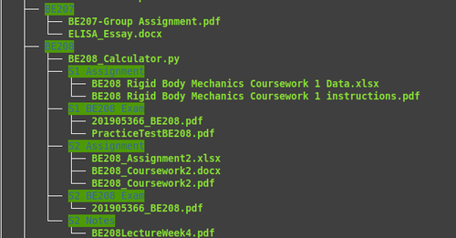

How I manage stress as a student - the Zoom-out process
Sep 16 '21 • Written by Yassen Shopov
📖 7 minute read
At the start of a new school/uni/college term, we are hopeful, ambitious, and most importantly - confident that we will be disciplined and focused throughout the year.
Oh, my sweet summer child.
If you’re even a little bit like me after just a few weeks of hustling, the following applies:
⚠️ Your notes are all over the place.
⚠️ Your deadlines are piling up and you are staying up late to get on track.
⚠️ You have started neglecting your own priorities in favor of schoolwork.
All of those can lead to an increase in your stress levels, which will make it even harder to adjust your focus and stay disciplined during the term. And stress can lead to a ton of unhelpful things concerning your health, such as a decreased quality of sleep, slowed-down metabolism, a decrease in the quality of your immune response.
So, we already agree that stress is the enemy and it is most commonly caused by too much work piling up. In this article, I will list 3 ways in which you can zoom out on your life and reconfigure your priorities, essentially restarting your routines and getting you back on track.
You can think of it as the Zoom-out process or the “Have you tried turning it off and on again?” approach.
1. You ARE your systems
As James Clear famously said in his book about habit-building, “Atomic Habits”:
“You do not rise to the level of your goals. You fall to the level of your systems.”
I may or may have not used this quote at least once more in some other article, but oh well, it is just a great quote.
What James tries to imply here is that we may have the boldest aspirations, but it is our smallest actions that determine the large consequences. You may have the epic goal of getting abs this year, but it is not your daydreaming that will make your physique shine - it’s the daily crunches you do and the unhealthy food you don’t eat.
So if you find yourself on the verge of an assignment deadline, then one of your systems is probably malfunctioning or missing entirely.
As I have suggested in this article on building effective systems for studying, you most probably would benefit from a table (in Notion or another organization app). In this table, you will be filling out all your assignments, exams, and coursework, with their respective deadline in the other column. If possible, add reminders a few days/weeks before the deadline, and if you cannot - just check it regularly, to make sure you are on top of things.
Another thing that may be causing stress is when your notes are all over the place. This is where binders, dedicated notebooks, and shelves in your room come to the rescue. Your digital documentation deserves as much care, so you can see at a glance where every file lives. The way I manage my files is with a tree structure.
So for example: (“Uni” -> “Year3” -> “Biology301” -> “Semester_1_Assignment”).
2. Take control of the Timeline
The reason we feel so at ease at the beginning of the year is the fact that we have so much time left to do things. After all, who studies for exams 8 weeks in advance?
But once the wheel starts rolling, more and more deadlines pile up, and even if you have a proper system of tracking them (if you don’t, go back to Step 1), you automatically get messier. The fact that you’re now more busy doing things than planning them is a good thing, but if you rely too much on your own inertia, you may lose focus.
So what do we do when we want to get somewhere? We take out the roadmap.
And in this case the roadmap is the timeline of events during the year. Or, in other words, a calendar.
Now, using a calendar efficiently is a skill by itself, but some basics are really easy to get into.
Fill in your lectures, classes, and tutorials as recurring calendar events, so you know what the week will look like.
Enter some deadlines as events - this will make you pay special attention (you can also try color-coding)
Put in events continuously as you go along.
This way you can build the habit of, well, knowing where you are in the timeline and taking notice when stress starts piling up so you can mitigate (usually right in the middle of the term).
3. Weekly reviews
If you ask me, “What is the most powerful productivity tactic that is the most underrated?”, my answer would 100% be weekly reviews.
The weekly review doesn’t have to be anyhing complex, time-consuming, or boring. It’s a bit like meditation - it’s essentially being still for a while, nothing more, nothing less.
As for the weekly review I personally do, it consists of the following points:
Taking a look at my weekly averages (sleep, weight, workouts) and if it’s going in an unfavorable direction, I take action.
Listing my accomplishments for the week.
Tracking my progress on my projects.
Getting ready with the event for the next week.
Something as simple as taking 15 minutes every Sunday to reflect on the past week and think in advance for the one ahead can bring you far.
Hope you feel a tad bit less stressed out after reading this blog.
[11:25]
by Thomas Frank